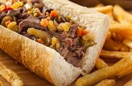

Easy Slow Cooker Italian Beef

Description
Below is the ingredient list and recipe instructions for an easy slow cooker Italian beef courtesy of All Recipes
Ingredients
- 1 pound thinly sliced roast beef
- 1 (0.7 ounce) package dry Italian-style salad dressing mix
- 1 (16 ounce) jar pepperoncini, sliced
- 1 (10.5 ounce) can beef broth
Steps
- Combine roast beef, dry dressing mix, pepperoncini, and beef broth in a slow cooker. Cook over medium-high heat until hot, about 1 hour.